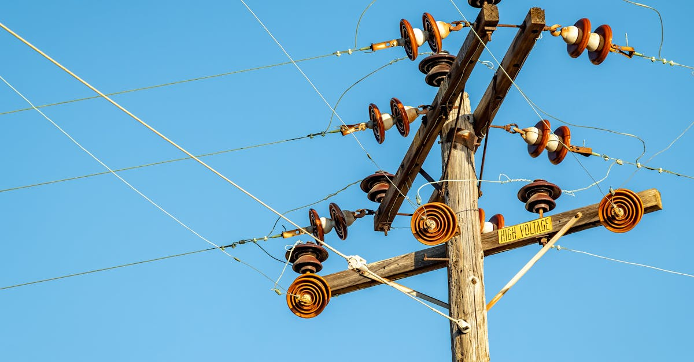
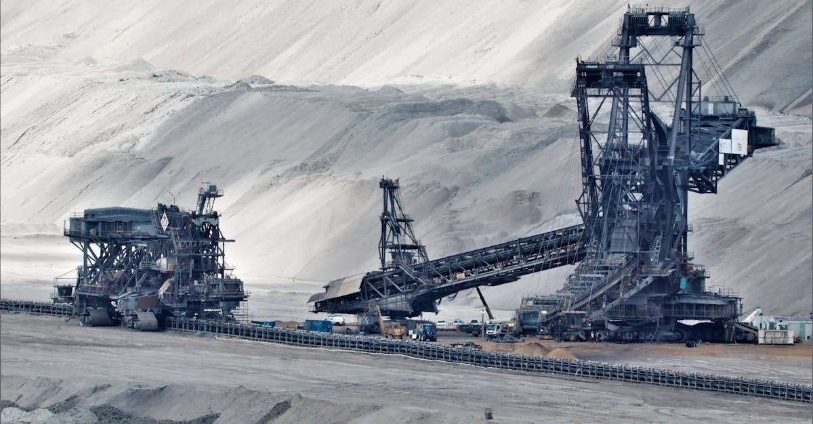

L'Intelligence Artificielle, un Monstre Gourmand en Électricité et en Cuivre
L'engouement actuel pour l'intelligence artificielle, souvent qualifié de « boom de l'IA », ne se limite pas aux avancées logicielles et aux algorithmes révolutionnaires. Il déclenche une demande sans précédent pour des ressources physiques fondamentales, et le cuivre se retrouve au cœur de cette nouvelle ruée. Pourquoi ce métal, si commun dans nos vies, devient-il soudainement une denrée si précieuse ? La réponse réside dans l'infrastructure nécessaire pour alimenter et connecter les systèmes d'IA. Chaque centre de données, chaque supercalculateur, chaque réseau de communication qui soutient l'IA a besoin de quantités massives de cuivre. Des câbles haute performance aux systèmes de refroidissement sophistiqués, en passant par les transformateurs et les infrastructures de distribution électrique, le cuivre est le système nerveux de l'économie numérique. Les projections montrent une augmentation spectaculaire de la consommation d'électricité, directement corrélée au déploiement des modèles d'IA générative et des applications qui en découlent. Cette soif d'énergie se traduit inévitablement par une pression accrue sur l'approvisionnement en cuivre. Pensez-y : pour chaque nouvel entraînement de modèle d'IA ou chaque requête traitée par une intelligence artificielle, une quantité d'électricité, et donc de cuivre, est consommée. C'est un cercle vertueux… ou vicieux, selon votre point de vue sur la durabilité et l'accessibilité des ressources. Les marchés financiers, toujours à l'affût des tendances qui redessinent l'économie mondiale, commencent à intégrer ce facteur dans leurs analyses. Les entreprises qui maîtrisent l'IA et celles qui fournissent l'infrastructure nécessaire à son essor sont vues comme des opportunités d'investissement majeures. Et dans cette équation complexe, le cuivre joue un rôle d'arbitre silencieux mais crucial.
👉 À lire : IA trop dangereuse : les marchés financiers sous haute tension

La Production Américaine de Cuivre à la Traîne : Un Défi Stratégique
Alors que la demande mondiale de cuivre explose, portée par la révolution de l'IA et la transition énergétique, la production américaine semble figée dans le temps. Depuis des décennies, le pays peine à augmenter significativement son offre domestique. Cette stagnation est d'autant plus préoccupante que les États-Unis sont un consommateur majeur d'électricité, et donc, par extension, de cuivre. La conséquence logique ? Une dépendance croissante vis-à-vis des importations. Cette situation soulève des questions stratégiques : comment un pays qui aspire à leader dans les technologies de pointe peut-il se permettre d'être aussi vulnérable sur un matériau aussi essentiel ? Plusieurs facteurs expliquent cette situation paradoxale. Tout d'abord, l'ouverture de nouvelles mines de cuivre est un processus extrêmement long et complexe aux États-Unis. Il faut des années, voire des décennies, pour obtenir les permis nécessaires, réaliser les études d'impact environnemental et satisfaire aux réglementations strictes. De plus, les coûts d'extraction sont souvent plus élevés qu'ailleurs dans le monde, rendant les projets américains moins compétitifs face aux géants miniers internationaux. Les défis réglementaires et l'opposition locale peuvent également freiner, voire bloquer, des projets prometteurs. L'exemple de la mine Resolution en Arizona, détenue par Rio Tinto, illustre parfaitement cette problématique. Malgré des réserves considérables, le projet fait face à d'innombrables obstacles administratifs et juridiques. Cette course aux ressources met en lumière une réalité : la géopolitique des matières premières est plus pertinente que jamais. Pour les investisseurs, comprendre ces dynamiques est essentiel. Cela peut influencer non seulement la valeur des actions minières, mais aussi la rentabilité des entreprises technologiques qui dépendent de cet approvisionnement. Dans le monde de la finance, et particulièrement dans celui du trading algorithmique, anticiper ces pénuries et ces fluctuations de prix est une compétence clé. L'IA, justement, est de plus en plus utilisée pour analyser ces corrélations complexes.
👉 À lire : Sécurité enfants en ligne : Starmer réunit les géants US tech
Rio Tinto et la Mine Resolution : Symbole des Potentiels et des Freins Américains
Au cœur de l'Arizona, la mine de cuivre de Resolution, un projet d'envergure porté par le géant minier Rio Tinto, incarne à la fois l'immense potentiel des ressources américaines et les difficultés monumentales pour les exploiter. Avec des réserves estimées parmi les plus importantes au monde, ce gisement pourrait théoriquement répondre à une part significative de la demande nationale de cuivre, particulièrement pertinente dans le contexte actuel de l'essor de l'IA. Cependant, le chemin vers la production est semé d'embûches. Le projet est en développement depuis plus de quinze ans, illustrant la lenteur des processus d'autorisation et de mise en œuvre aux États-Unis. Les préoccupations environnementales, les droits fonciers des tribus amérindiennes locales (notamment les San Carlos Apache) et les complexités réglementaires ont engendré une série de batailles juridiques et administratives qui ont considérablement retardé le lancement des opérations. Rio Tinto a investi des sommes colossales dans ce projet, mais les retours sur investissement sont, pour l'instant, suspendus à la résolution de ces litiges. L'histoire de Resolution est un cas d'étude fascinant pour les analystes financiers et les experts en stratégie d'approvisionnement. Elle démontre que posséder des ressources ne suffit pas ; il faut aussi naviguer dans un écosystème complexe de parties prenantes, de réglementations et de considérations sociales. Pour les investisseurs dans le secteur des matières premières, comprendre ces risques et ces délais est primordial. Cela influence directement la valorisation des actifs et les stratégies d'allocation de capital. La capacité à surmonter ces obstacles pourrait non seulement transformer l'approvisionnement en cuivre des États-Unis, mais aussi servir de modèle pour d'autres projets miniers critiques. Dans le domaine du trading de cryptomonnaies, où les actifs numériques sont souvent corrélés aux mouvements des marchés traditionnels, une compréhension approfondie de ces facteurs macroéconomiques, comme la disponibilité des métaux industriels, peut offrir un avantage compétitif.

La Chine et les Flux Mondiaux de Cuivre : Une Influence Déterminante
La dynamique de l'offre et de la demande de cuivre ne peut être comprise sans examiner le rôle prépondérant de la Chine sur le marché mondial. Bien que l'article source mentionne brièvement la position de la Chine, il est crucial d'approfondir son influence. La Chine est non seulement le plus grand consommateur de cuivre au monde, absorbant une part considérable de la production minière globale, mais elle est également un acteur majeur dans le raffinage et la transformation du métal. Cette position duale lui confère un levier considérable. Alors que les États-Unis peinent à augmenter leur production domestique face à une demande intérieure croissante stimulée par l'IA, la Chine continue d'investir massivement dans ses propres capacités minières et de transformation, tout en sécurisant des approvisionnements à l'étranger. Cette stratégie lui permet de contrôler une part importante de la chaîne de valeur. Les prix du cuivre sont donc fortement influencés par les politiques industrielles chinoises, ses besoins en infrastructures et sa demande pour la fabrication de produits électroniques et de véhicules électriques. Pour les marchés financiers, et en particulier pour ceux qui utilisent des stratégies de trading automatisées basées sur l'IA, comprendre la dynamique sino-américaine dans le secteur du cuivre est essentiel. Les tensions commerciales, les politiques de substitution des importations ou les initiatives de développement d'infrastructures en Chine peuvent avoir des répercussions immédiates sur les cours mondiaux. Les algorithmes de trading sophistiqués peuvent analyser des flux de données complexes – rapports de production, indicateurs économiques chinois, mouvements des flottes de transport maritime – pour anticiper ces variations. La capacité à décrypter ces signaux, souvent subtils, est ce qui distingue les traders performants dans un environnement de plus en plus interconnecté. La course au cuivre n'est donc pas seulement une affaire de ressources physiques, mais aussi une bataille d'influence économique et géopolitique.
L'Impact sur les Coûts Énergétiques et l'Économie Numérique
La tension sur le marché du cuivre, exacerbée par la demande croissante des centres de données et des réseaux électriques nécessaires à l'IA, a des répercussions directes et indirectes sur les coûts énergétiques. Le cuivre étant un excellent conducteur électrique, il est indispensable dans la construction et la modernisation des infrastructures de production, de transport et de distribution d'électricité. Une augmentation de la demande pour ces applications, combinée à une offre domestique stagnante aux États-Unis, pousse mécaniquement les prix du cuivre à la hausse. Ces coûts plus élevés se répercutent ensuite sur l'ensemble de la chaîne énergétique. La construction de nouvelles centrales électriques, la mise à niveau des réseaux existants pour supporter la charge accrue des data centers, ou même la simple maintenance des infrastructures, deviennent plus onéreuses. Pour les entreprises qui développent et déploient des solutions d'IA, cela signifie des coûts d'exploitation potentiellement plus élevés, non seulement pour l'électricité consommée, mais aussi pour l'infrastructure physique qui la rend possible. Les coûts de l'infrastructure deviennent un facteur critique dans la rentabilité des projets d'IA. Cette hausse des coûts peut également freiner l'expansion de l'accès à l'IA, notamment dans les régions où l'approvisionnement électrique est déjà sous tension. Les agents IA de trading, par exemple, qui opèrent 24h/24, dépendent d'une alimentation électrique stable et abordable. Une augmentation des coûts énergétiques, même marginale, peut affecter leur efficacité et leur rentabilité à grande échelle. Les analystes financiers suivent de près l'indice du cuivre comme un baromètre de la santé économique et des pressions inflationnistes potentielles. Dans le monde des cryptomonnaies, où l'énergie est un sujet de débat constant (notamment avec le Proof-of-Work), la corrélation entre le coût de l'énergie et la disponibilité des métaux industriels comme le cuivre devient un facteur d'analyse de plus en plus pertinent pour les stratégies d'investissement.

Perspectives d'Investissement : Cuivre, Énergie et Opportunités Crypto
Face à cette demande exponentielle et aux défis d'approvisionnement, le secteur du cuivre présente des perspectives d'investissement particulièrement intéressantes. Les entreprises minières qui parviennent à augmenter leur production, ou celles qui développent de nouvelles technologies d'extraction plus efficaces et moins coûteuses, sont susceptibles de bénéficier de cette tendance haussière. L'investissement dans le cuivre peut se faire via des actions de sociétés minières, des fonds négociés en bourse (ETF) axés sur les métaux industriels, ou même via des contrats à terme. Cependant, il est crucial de considérer les risques associés, notamment la volatilité des prix des matières premières, les incertitudes géopolitiques et les délais de mise en production de nouveaux projets comme Resolution. Au-delà du cuivre lui-même, la transition énergétique, moteur parallèle de la demande de cuivre, ouvre également des portes. Les investissements dans les énergies renouvelables, les technologies de stockage d'énergie et la modernisation des réseaux électriques sont autant de secteurs qui bénéficieront de cet environnement. Et comment cela se connecte-t-il au monde de l'IA et des cryptomonnaies ? L'IA est utilisée de plus en plus pour optimiser les stratégies d'investissement, y compris dans les actifs numériques. Les agents IA de trading sur CryptoMind AI, par exemple, analysent en temps réel des milliers de points de données, y compris les indicateurs macroéconomiques comme le prix du cuivre et les tendances énergétiques, pour identifier des opportunités de profit. Ces algorithmes peuvent exploiter la volatilité des marchés, anticiper les mouvements de prix influencés par les pénuries de matières premières, et exécuter des transactions avec une rapidité et une précision inégalées. L'essor de l'IA crée donc un cercle vertueux : il stimule la demande de cuivre, ce qui crée des opportunités d'investissement dans les marchés traditionnels, et il fournit les outils (IA) pour mieux naviguer et potentiellement capitaliser sur ces opportunités, y compris dans l'espace crypto. C'est une convergence fascinante entre le monde physique des ressources et le monde numérique de la finance.
L'IA comme Levier pour Naviguer la Complexité des Marchés
La complexité croissante des marchés financiers, amplifiée par les interdépendances entre l'économie réelle (comme la course au cuivre) et les actifs numériques, rend l'analyse humaine de plus en plus ardue. C'est là que l'intelligence artificielle révèle tout son potentiel. Les agents IA de trading, tels que ceux développés par CryptoMind AI, sont conçus pour traiter et analyser des volumes massifs de données, bien au-delà des capacités humaines. Ils peuvent ingérer des informations provenant de sources variées : rapports financiers, actualités économiques mondiales (comme celles concernant l'approvisionnement en cuivre), données de marché des cryptomonnaies, indicateurs techniques, sentiment des réseaux sociaux, et même des données satellites sur l'activité minière. En corrélant ces informations disparates, ces IA peuvent identifier des schémas et des tendances qui échapperaient à l'œil humain. Par exemple, un agent IA pourrait détecter une corrélation subtile entre une augmentation du prix du cuivre, une hausse de la demande d'électricité dans certaines régions, et un mouvement potentiel sur une cryptomonnaie spécifique liée à l'énergie ou à la technologie. L'IA permet non seulement d'identifier ces opportunités, mais aussi d'exécuter des transactions de manière automatisée, 24h/24, 7j/7, en minimisant les biais émotionnels qui affectent souvent les décisions des traders humains. Dans un contexte où la demande de cuivre est directement liée à l'essor de l'IA elle-même, cette boucle de rétroaction crée un environnement de marché fascinant et volatile. Les traders qui utilisent des outils basés sur l'IA sont mieux équipés pour naviguer dans cette complexité, anticiper les mouvements de prix liés aux pénuries de ressources, et potentiellement générer des rendements plus stables. L'IA n'est donc pas seulement le moteur de la demande de cuivre ; elle devient aussi l'outil indispensable pour comprendre et capitaliser sur les marchés qui en résultent.
Conclusion
L'âge de l'intelligence artificielle ne se construit pas uniquement sur des lignes de code et des processeurs puissants. Il repose également sur des fondations physiques solides, parmi lesquelles le cuivre joue un rôle absolument critique. La demande croissante pour alimenter les centres de données et les réseaux électriques met une pression sans précédent sur les ressources mondiales, exposant la vulnérabilité de pays comme les États-Unis, dont la production domestique stagne depuis des décennies. Les projets ambitieux comme la mine Resolution en Arizona illustrent les défis majeurs – réglementaires, environnementaux et financiers – qui entravent l'augmentation de l'offre. Pendant ce temps, la Chine continue de consolider sa position dominante sur le marché mondial. Cette dynamique a des conséquences directes sur les coûts énergétiques et l'économie numérique dans son ensemble. Pour les investisseurs, cette situation ouvre des perspectives intéressantes dans le secteur minier et les technologies liées à l'énergie. Mais surtout, elle souligne l'importance croissante de l'intelligence artificielle comme outil d'analyse et de trading. Les agents IA de trading offrent la capacité de traiter la complexité des marchés, d'anticiper les impacts des pénuries de matières premières et de naviguer dans la volatilité avec une efficacité redoutable. Dans ce paysage en mutation rapide, où l'IA est à la fois le moteur de la demande et la solution pour la comprendre, maîtriser ces outils devient essentiel pour quiconque souhaite prospérer sur les marchés financiers, y compris ceux des cryptomonnaies.